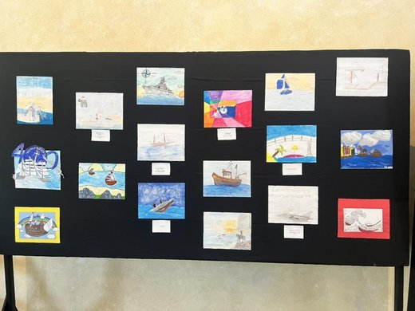
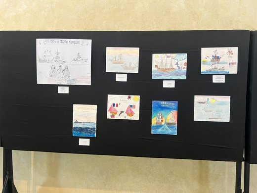
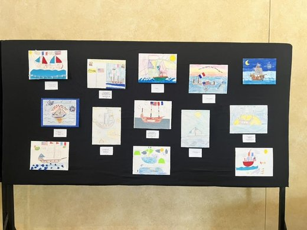
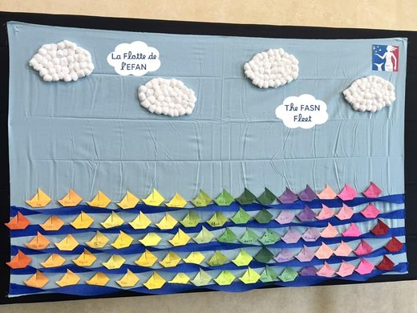
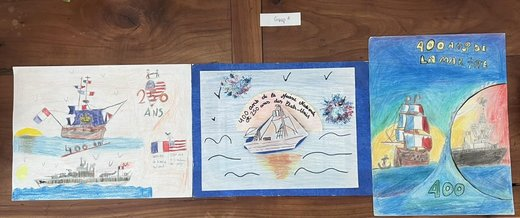
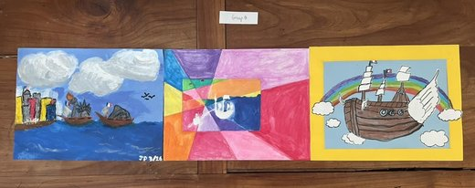
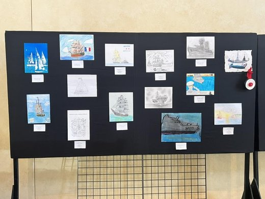
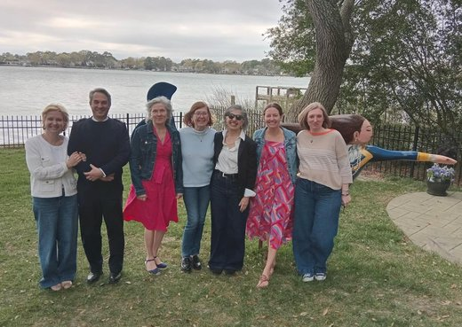
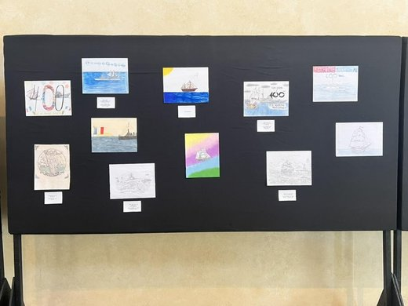
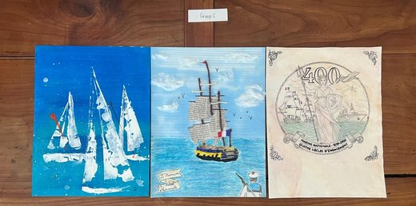

About the competition
The art competition is organized by the students of the French American School of Norfolk (FASN). It invites participants to create artworks around a common theme, renewed every year.
This year’s theme
The 2025-2026 artworks celebrate the 400 years of the French Navy, as part of the US 250. The theme pays tribute to the history and legacy of the French Navy.
The exhibition
All the works submitted were exhibited at the Harrison Opera House, in Norfolk, on April 12, 2026.
Purpose
The competition aimed to showcase creativity, talent and heritage by sharing the artistic vision of emerging young artists.
The posters


The exhibition in pictures

Artworks on display at the Harrison Opera House

Artworks on display (continued)

Another panel of the exhibition

“The FASN Fleet”: paper boats made by the students

Group A artworks

Group B artworks

Drawings and paintings on the Navy theme

A friendly moment around the competition

400 years of the Navy, as seen by the students

Group C artworks